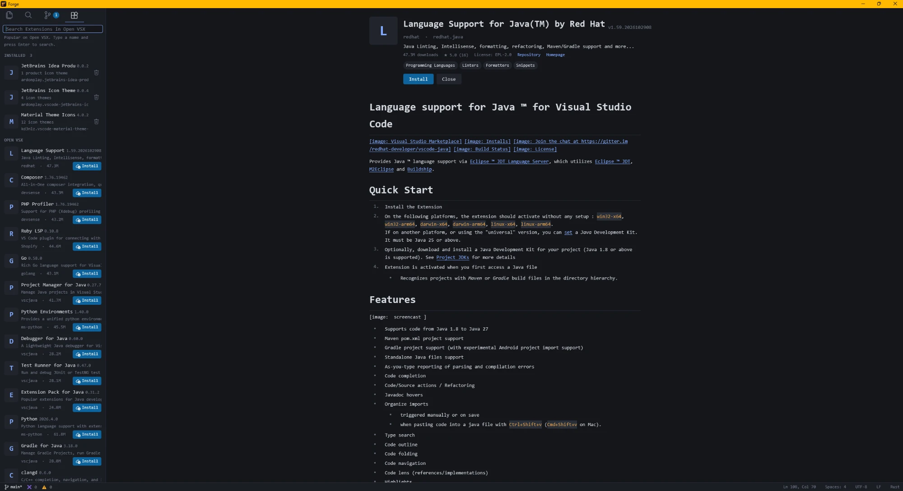

A native code editor, written in Rust.
Forge draws every pixel on the GPU with GPUI, edits the way VS Code taught you to, and installs your extensions from Open VSX. Free and open source. Windows for now.
An illustration drawn in HTML. The code is a real file from Forge itself.
Familiar from the first keystroke.
Everything on this page is built and in the installer today. Every command has a VS Code id and shows its shortcut.
Find anything in a few keys
Quick Open, the Command Palette, symbols, go to line, breadcrumbs and split editors. Search
the project with Find in Files, which respects .gitignore, and replace across
files, which asks before it changes anything.
Ctrl+PCtrl+Shift+PCtrl+Shift+F
No matching command
Type to filter. These are real Forge commands.
Source control that writes the first draft
Stage, commit, push, pull, stash, branches, blame and file history, using your own
git. Press the sparkle in the message box and an AI writes a one-line subject
from your staged diff, only when you ask. You edit it, then commit.
Uses your OpenAI API key, stored encrypted for your Windows account. Only the staged diff and your last ten commit subjects are sent.
Staged Changes 2
- scroll.rsA
- ext_view.rsM
An illustration. Press the sparkle.
Language servers
Diagnostics, completion, hover, definition, references, rename, quick fix and format. Forge installs the servers it can into its own folder.
Debugging
F5 starts Python, Node or Rust under a debugger with breakpoints, stepping, variables and a call stack.
Terminal
Several integrated terminals in the bottom panel, each with its own tab and 5000 lines of scrollback.
Editing
Multi-cursor, move and copy lines, auto-closing brackets, expand selection by syntax, cursor undo, sort lines.
Markdown preview
A live preview beside the editor that scrolls with it. Links open in your browser or in Forge.
Themes and settings
Forge Dark, Forge Light and Forge High Contrast, a Settings page that edits
settings.json in place, and a session that reopens where you left off.
Syntax highlighting covers 29 languages and file kinds, from Rust and TypeScript to
Dockerfile and .env.
Your extensions come along.
Forge installs VS Code extensions from Open VSX, or from a
.vsix file. It uses what they declare (themes, icon themes, languages, grammars,
snippets) and, with Node.js on your PATH, runs their code in an extension host with
Forge's own implementation of the vscode API.

Works today
- Color themes, product icon themes and file icon themes
- Languages and TextMate grammars
- Snippets with tab stops and mirrors
- Commands, status bar items, output channels and diagnostics
- Documents, settings, workspace edits and the file system API
Not there yet
- Webviews, tree views, notebooks and the terminal API
- Language features from extension code, which are accepted and ignored
- Debug adapters, tasks and authentication from extensions
A call into a missing part of the API is ignored, so an extension still starts.
Early, and honest about it.
- Windows only
- There is no macOS or Linux build yet.
- Unsigned installer
- Windows SmartScreen may warn when you run it.
- Part of the VS Code API
- Extensions that rely on webviews or tree views start, but those parts don't show.
- Bring some servers
- rust-analyzer, gopls, clangd and a few others are used once they are on your
PATH. - Partial reopening
- Forge restores open files and carets, not unsaved edits, and only the first editor group's tabs.
Get Forge.
Download
Windows 10 or 11. Installs for your user only, with no admin prompt, and offers Open
with Forge in the right-click menu, a desktop icon, and forge . on
your PATH.
Forge-Setup-0.1.0. Uninstall from Settings, Apps.
Read the source
A Rust workspace: a text engine, syntax, a language-server client, an extension host and the GPUI app. Free and open source under the MIT license.
Star on GitHubBuild it with cargo run -p forge-app.
Join early access
One short email when a release lands. Nothing else, and you can leave any time.